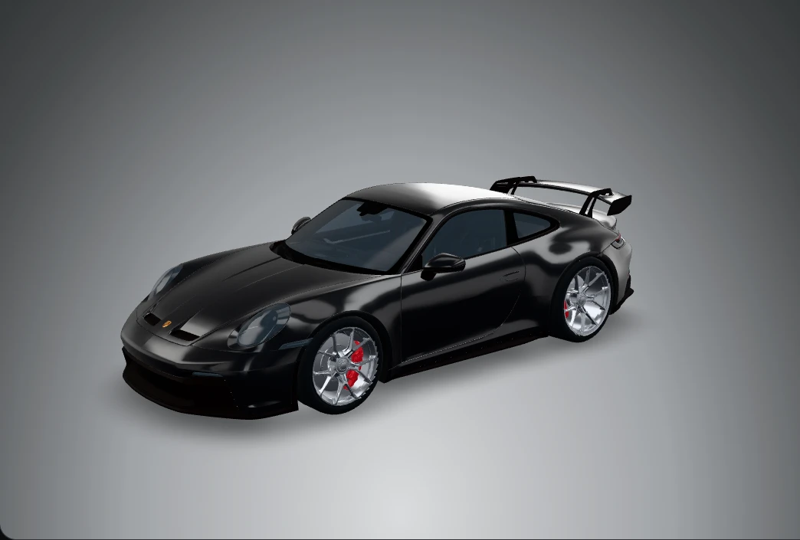
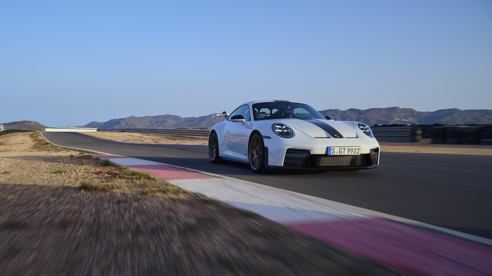

Đánh giá chuyên sâu
Trải nghiệm Porsche 911 GT3: Đỉnh cao cỗ máy hút khí tự nhiên 9.000 vòng/phút trên đường đua
Mốc 9.000 vòng/phút nằm ở cuối đồng hồ tua, nhưng nó chi phối cách Porsche xây dựng cả chiếc 911 GT3. Ở bản 992 nâng cấp, động cơ, hộp số và khung gầm cùng phục vụ một việc rất cụ thể: để người lái biết chiếc xe đang làm gì trước khi yêu cầu nó làm thêm.
Bài phân tích biên tập dựa trên hồ sơ kỹ thuật Porsche. Các tình huống đường đua dùng để minh họa cách xe vận hành.
Thiết kế khí động học
Nhìn ngang, 911 GT3 vẫn có đường mái đổ về đuôi đặc trưng của 911. Cánh gió sau dựng cao làm thay đổi tỷ lệ ấy, nhưng phần đáng nhìn kỹ là hai chân đỡ cổ thiên nga. Chúng ôm cánh từ phía trên để mặt dưới ít bị gián đoạn, nơi dòng khí cần đi qua sạch hơn. Phía trước, mép hướng gió và các chi tiết dưới gầm góp phần cân bằng lực ép giữa hai trục.
Lợi ích dễ hình dung nhất nằm ở một khúc cua nhanh, nơi chiếc xe phải giữ tải ngang lâu hơn một cú đổi hướng ngắn. Khi tốc độ tăng, khí động học có vai trò rõ hơn. Ở một góc cua chậm, độ bám cơ học và cách người lái chuyển tải vẫn chi phối cảm giác ban đầu. Hai phần việc ấy giải thích vì sao Porsche phát triển thân xe và hệ treo cùng nhau.

Sức mạnh cỗ máy Flat-6
Boxer sáu xi-lanh 4,0 lít cho 510 PS ở 8.500 vòng/phút và còn thêm 500 vòng trước giới hạn. Sáu bướm ga riêng giúp động cơ phản hồi theo từng thay đổi nhỏ ở bàn đạp. Hệ thống bôi trơn cácte khô duy trì cấp dầu trong điều kiện tải cao. Hai chi tiết này cho thấy Porsche đã thiết kế động cơ quanh phản ứng chân ga và khả năng làm việc lâu ở tua cao.
Hãy hình dung đoạn thẳng ngay sau một khúc cua. Khi chân ga mở dần, người lái có thể giữ nguyên cấp số để nghe âm sắc từ dải trung chuyển lên âm vực cao, hoặc sang số sớm để chuẩn bị cho điểm phanh kế tiếp. Vùng tua rộng đem lại quyền chọn ấy. Con số 9.000 có ý nghĩa nhất khi nó giúp nối hai khúc cua bằng một cấp số hợp lý.
Nghe động cơ 911 GT3
Bản thu chính thức của Porsche ↗Cảm giác vô-lăng và hộp số PDK
Hệ treo tay đòn kép phía trước giúp kiểm soát góc đặt bánh khi xe chịu tải trong cua. Cùng với đánh lái bánh sau, bố trí này làm rõ hai giai đoạn: mũi xe đổi hướng khi người lái đặt góc lái, rồi cả thân xe ổn định theo quỹ đạo đã chọn. Trên đường đua, giá trị của sự chính xác nằm ở khả năng lặp lại một đường chạy và nhận ra mình đã thay đổi điều gì ở vòng kế tiếp.
PDK bảy cấp giữ nhịp chuyển số ngắn, cho người lái thêm thời gian tập trung vào điểm phanh và vị trí xe. Tỷ số truyền cuối ngắn hơn trên bản nâng cấp giúp động cơ trở lại vùng tua hữu dụng sớm sau mỗi lần lên số. Porsche công bố 3,4 giây từ 0 đến 100 km/h cho cấu hình PDK. Trên một vòng chạy, lợi ích còn nằm ở việc có thể chủ động chọn số trước khi vào cua và giữ tay trên vô-lăng qua đoạn thoát cua.
Kết luận
911 GT3 thuyết phục ở cách các bộ phận cùng trả lời người lái. Trục trước cho biết xe đã nhận góc lái, hộp số giữ động cơ ở dải tua mong muốn, còn tiếng boxer làm rõ thời điểm cần chọn cấp số tiếp theo. Cái giá của cách tiếp cận này là người lái phải sẵn sàng làm việc với chiếc xe. Phần thưởng là mỗi vòng chạy cho thêm một điều để sửa, thay vì chỉ cho thêm một con số để nhớ.
Nguồn kỹ thuật · Động cơ và hiệu năng · Khí động học · Hồ sơ 911 GT3